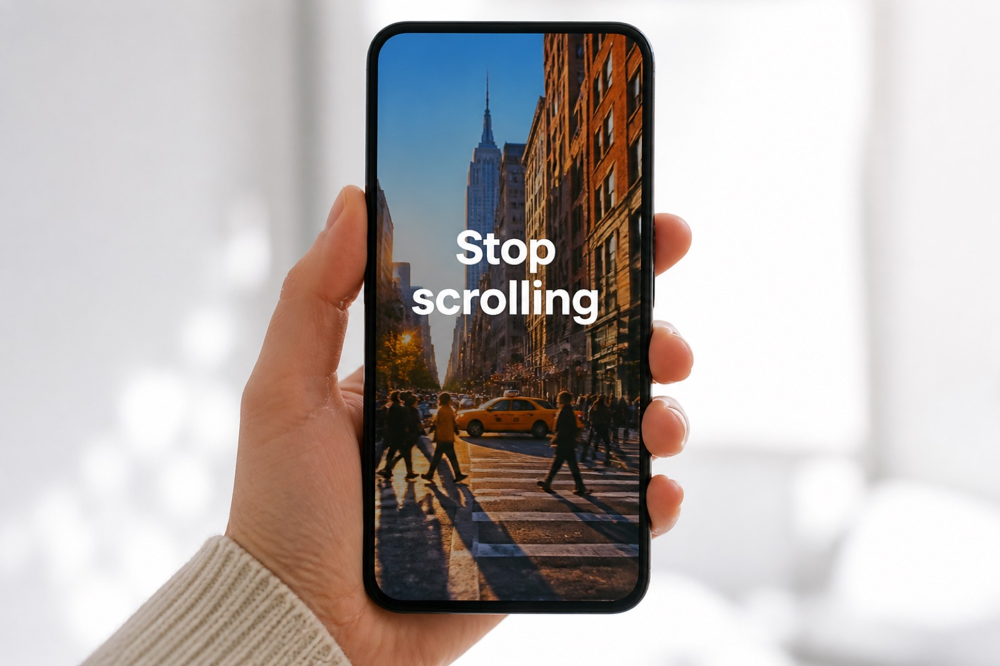

Generator
TikTok script generator
Hooks for the first three seconds, a timed spoken draft, and a caption you can paste. Then you film. The generator does not render a TikTok.

TikTok scripts fail when they greet the room. The first line has to earn the second. This TikTok script generator writes five openings, then a body you can say in 15–60 seconds, then the caption and on-screen lines that sit above the progress bar.
Instagram Reels and YouTube Shorts can reuse the same spoken spine. Switch the platform chip if you want titles and hashtags retuned for the other app. One topic, not one caption pasted three times.
What a TikTok pack includes
- Three angles so you are not locked to one joke or one claim
- Five hooks under 16 words, built for a cold open
- One spoken script — no stage directions, no “cut to B-roll” novel
- Caption and CTA you can paste under the post
- On-screen text in the 9:16 safe zone
How to write a TikTok with this
On Write, set platform to TikTok. Story and listicle styles fit Reddit-style opens. Faceless fits voiceover over hands, a desk, or a screen recording you already have rights to.
Type the one thing the clip is about. Generate. Pick one hook. Read the script at talking speed. If a line only works as a caption, keep it in on-screen text and say something shorter.
Captions after you shoot
ShortDrafts writes the words. TikTok can auto-generate captions from speech after you upload. Check that the burned-in lines match what you said so the clip still makes sense with sound off. See multi-platform captions if you will post the same idea on Shorts and Reels too.
Related
YouTube Shorts script generator · Hook generator · Story and listicle Shorts
FAQ
What is in a TikTok script generator pack?
Ideas, five hooks, one timed script, titles, caption, CTA, and on-screen text. Copy, edit, or regenerate any block.
Does this post to TikTok or burn captions in?
No. You leave with words. You film in the app or an editor. Auto-captions are TikTok’s job after upload.
Can I use this for Instagram Reels too?
Yes. Run the topic again with Reels selected, or start from Write and tap Reels. The spoken draft can stay; the caption should not be identical.